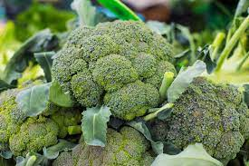
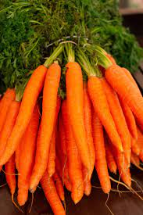

Vegetables are parts of plants that consumed by humans or other animals as food. The original meaning is still commonly used and is applied to plants collectively to refer to all edible plant matter, including the flowers, fruits, stems, leaves, roots, and seeds. An alternate definition of the term is applied somewhat arbitrarily, often by culinary and cultural tradition. It may exclude foods derived from some plants that are fruits, flowers, nuts, and cereal grains, but include savoury fruits such as tomatoes and courgettes, flowers such as broccoli, and seeds such as pulses.
Some Favourites
Fresh Fruits and Vegetables
vegetables were collected from the wild by hunter-gatherers and entered cultivation in several parts of the world, probably during the period 10,000 BC to 7,000 BC, when a new agricultural way of life developed. At first, plants which grew locally would have been cultivated, but as time went on, trade brought exotic crops from elsewhere to add to domestic types. Nowadays, most vegetables are grown all over the world as
Some Diseases
| Veggie | Vitamins |
|---|---|
| Carrot | Vitamin-A |
| Broccoli | Vitamin-A,B1,B2 |
| Cabbage | Vitamin-A,B1,B6,C |
may exclude foods derived from some plants that are fruits, flowers, nuts, and cereal grains, but include savoury fruits such as tomatoes and courgettes, flowers such as broccoli, and seeds such as pulses.
Originally, vegetables were
|  |  |
 |